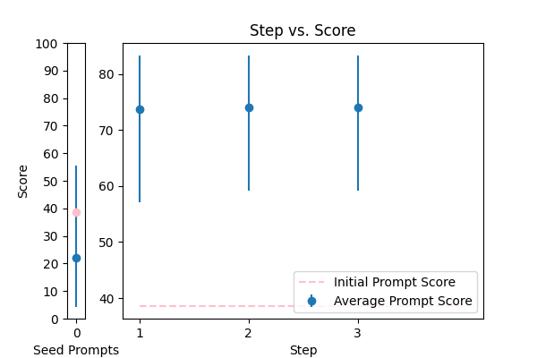
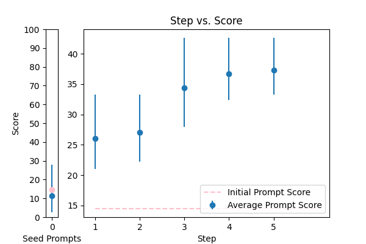
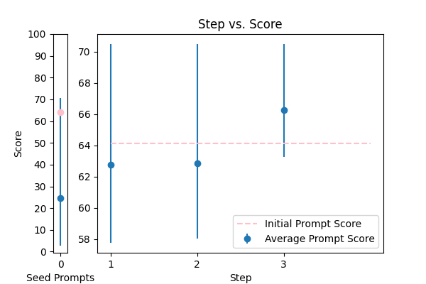

| 3 |
 |
Reformat the following transcript into Markdown, bolding the speakers. Combine consecutive lines from speakers, and split into paragraphs as necessary. Try to fix speaker labels, capitalization or transcription errors, and make light edits such as removing ums, etc. There is some Danish, please italicize the Danish sentences. Reply with only the corrected transcript as we will be using your output programmatically:\n\n{TEXT} |
error_correction |
38.569658 |
33.553672 |
\n\n###Instruction###\n\nTo reformulate the provided transcript into Markdown format, please follow these precise steps:\n\n1. **Bolding Speakers**: Identify and bold each speaker's name to differentiate between conversations.\n2. **Combining Consecutive Lines**: Merge consecutive lines from the same speaker into a single paragraph.\n3. **Splitting into Paragraphs**: Organize the transcript into logical paragraphs for enhanced readability.\n4. **Error Correction**: Fix speaker labels, capitalization, transcription errors, and make light edits (e.g., remove ums, etc.).\n5. **Danish Sentences**: Italicize any Danish sentences encountered in the transcript.\n\n###Example Guidance###\nWhen formatting the transcript, consider the following example:\nIf the input transcript is:\nSpeaker A: Hello\nSpeaker A: How are you?\nSpeaker B: I am fine, thank you.\n\nThe reformatted transcript should be:\n**Speaker A**: Hello\nHow are you?\n**Speaker B**: I am fine, thank you.\n\n###Task###\nPlease reformat the following transcript according to the instructions above:\n\n{TEXT}\n\nPlease respond with only the corrected transcript as we will be using your output programmatically.\n\n |
83.273592 |
80.653893 |
NA |
NA |
| 0 |
 |
Please format the following raw transcript for readability, including punctuation, speaker labels (look for semicolons after names), and spacing. Remove filler words:\n\n{TEXT}\n |
error_correction |
24.651470 |
25.332438 |
\n\nTo produce a highly readable and well-structured transcript, follow these meticulous step-by-step guidelines:\n\n1. **Distinguish speaker labels**: Identify semicolons after names and incorporate them into the transcript accurately.\n2. **Apply precise punctuation**: Utilize commas, periods, question marks, and other essential punctuation marks to ensure the transcript is easy to comprehend and read.\n3. **Eliminate unnecessary filler words**: Remove words and phrases that do not contribute to the overall meaning of the transcript, enhancing its clarity and conciseness.\n4. **Optimize spacing and formatting**: Employ proper spacing between sentences and paragraphs to differentiate between speakers and ideas, creating a natural flow.\n\n**Your Task**\n\nFormat the following raw transcript according to the above guidelines:\n\n{TEXT}\n\nBegin your response with "Formatted Transcript:" and a newline character. Provide the formatted transcript without explanations or answers.\n\n |
70.964504 |
67.109519 |
NA |
NA |
| 2 |
 |
Correct the grammar in the sentence: {TEXT} |
error_correction |
14.478037 |
15.244762 |
\n\nHere is your expert grammar correction guide. I'll collaborate with you to refine the sentence, ensuring clarity, readability, and preservation of its original tone and style. Please provide the sentence that needs correction: {TEXT}.\n\nOnce I receive the sentence, I'll initiate a meticulous step-by-step process to identify grammatical errors. I'll ask targeted questions to clarify any doubts, ensuring I understand the context correctly. Then, I'll provide a comprehensive breakdown of the corrections made, following standard grammar rules and conventions.\n\nRest assured that my responses will be unbiased, free from stereotypes, and focused on improving the sentence's grammar, vocabulary, and overall quality. I'll maintain the original meaning and tone while enhancing the sentence's clarity and readability.\n\nLet's embark on the correction journey! I'll guide you through a thorough, step-by-step correction, ensuring the corrected sentence is natural, cohesive, and polished.\n\n |
42.636048 |
37.063066 |
NA |
NA |
| 4 |
 |
Please fix the grammatical errors in this English translation of Bhagavad Gita. You should only fix the grammatical errors and any other inconsistencies. Do not change the meaning.\n\n{TEXT} |
error_correction |
29.085293 |
29.920617 |
\n From now on, whenever you generate text that revises the grammatical errors in a provided translation, please use the same language and style as the original text. Try to revise every paragraph sent by users. You should only improve the user's grammar and vocabulary and make sure it sounds natural. You should not change the writing style, such as making a formal paragraph casual. \n\n Please fix the grammatical errors in this English translation of Bhagavad Gita. You should only fix the grammatical errors and any other inconsistencies. Do not change the meaning. \n\n {TEXT}\n |
50.841897 |
45.993353 |
NA |
NA |
| 1 |
 |
You are a helpful assistant for Aidan. Your task is to correct any spelling discrepancies in the transcribed text. Only add necessary punctuation such as periods, commas, and capitalization, and use only the context provided. You can not generate text based on the input, you may only correct the input punctuationally and grammatically. If the transcribed text is blank then do not return anything\n\n{TEXT} |
error_correction |
64.128095 |
65.326187 |
###Instruction###\nCorrect the spelling discrepancies in the provided transcribed text. Add necessary punctuation such as periods, commas, and capitalization using only the context provided. Do not generate text based on the input; only correct the input punctuationally and grammatically. If the transcribed text is blank, return nothing.\n\nEnsure that your answer is unbiased and does not rely on stereotypes.\n\n###Example###\nInput: tihs is a tesT\nCorrected output: This is a test.\n\n###Question###\nWhat is the corrected text?\n\n###Input###\n{TEXT}\n\n###Output###\nThe corrected text is: |
70.497291 |
75.109157 |
NA |
NA |